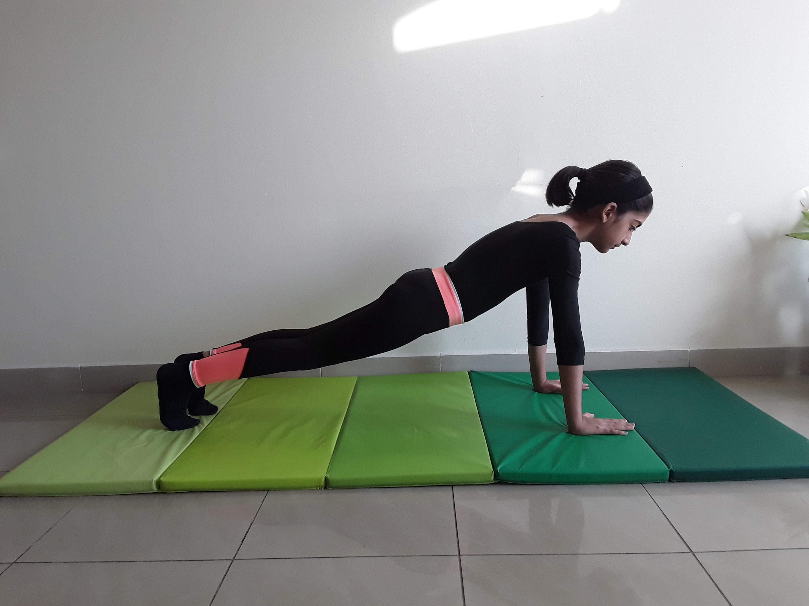

PLANK POSE

Steps to perform Plank Pose
- Begin in the plank position, face down with your forearms and toes on the floor. Your elbows are directly under your shoulders and your forearms are facing forward. Your head is relaxed and you should be looking at the floor.
- Engage your abdominal muscles, drawing your navel toward your spine. Keep your torso straight and rigid and your body in a straight line from your ears to your toes with no sagging or bending. This is the neutral spine position. Ensure your shoulders are down, not creeping up toward your ears. Your heels should be over the balls of your feet.
- Hold this position for 10 seconds. Release to floor.
- Over time work up to 30, 45, or 60 seconds.